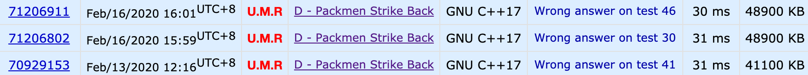

开头碎碎念
春节的时候大家因为放假了比较闲，就策划了一个康复训练计划，目标是年底大家 cf 上都能成为 IGM。虽然观望了一下最近的 cf，感觉只要能比较快的把傻逼题都写出来好像就足够上 IGM 了，如果足够幸运遇到 combine 场就更容易一些。但考虑到我和 sfiction 在成为社畜之后并没有太多时间来参加比赛，决定还是找一些难度比较合适的题来康复训练。
于是我糊了个脚本，爬了一下三人过题的并集，同时也爬了一下各个难度区间的题，开始了基于 Random Pick 的缘分康复计划。这个区间从一开始的 [2400, 2600] 一路上涨，现在右端点已经到 2900 了，同时大家的过题速度也减缓了，所以下面提到的一些题目可能难度浮动还是有一些的 >< 。
最新一次更新的内容
883D
首先可以想到的是二分答案。
然后想到的就是贪心check：

眉头一皱，感觉事情没有这么简单，还是来 dp 吧。
…
之前的更新
1033F
sf 看完题就说可以轻松 $O(4^w)$ ，可以把每一维按照 0123 排列，每一对数都对应超立方体上一个格子。此时and or xor 这些范围都是连续的，除了 not-xor 需要拆开，所以每次询问其他操作都只对应一个高维长方体，而 not-xor 对应 $2^w$ 个。这是突然发现每个长方体计算也要 $O(2^w)$ 的复杂度，凉凉。
我基于这个想法又发挥了一下，把 0 复制了一份接在 3 后面，这样整个超立方体变成了 $O(5^w)$ 级别的，但 not-xor 也变成了连续的区间，这样每次询问都只需要 $O(2^w)$ 的复杂度。但这样搞预处理的复杂度就爆炸了。但注意到其实 1 和 2 是完全等价的，所以我们可以去掉一个，这样超立方体又变回了 $O(4^w)$ 级别的。
我在实现的时候没有注意到每一维的区间大小都是 1 或者 2 这个性质，傻傻的用 $O(w 4^w)$ 预处理了前缀和，然后 $O(m 2^w)$ 来计算询问，跑了 6786ms 才过（时限7s，幸好我常数小）。稍微优化一下应该只需要 $O(n + 4^w + m 2^w)$ 的复杂度。
看了看题解竟然掏出了一个 FFT 来预处理，可以把预处理复杂度降到 $O(w 3^w)$。
1129D
$O(n^2)$ 的 DP 是显然的，我们考虑如何优化转移。
当我们枚举到第 $i$ 个数时，与 $a_{i-1}$ 结尾的段相比，只有 $a_{i}$ 的出现次数会发生变化。假设 $a_{i}$ 前两次出现的位置分别为 $pre1_{a_{i}}$ 和 $pre2_{a_{i}}$，则对于所有起始位置位于 $(pre2_{a_{i}}, pre1_{a_{i}}]$ 和 $(pre1_{a_{i}}, i]$ 中的段，需要被更新只出现一次的数的个数。
为了计算答案，对于每个位置，需要维护到当前位置的段内只出现一次的数的个数 $cnt_{i}$，每个位置结尾的 DP 值 $ f_{i} $，这样询问时需要对于所有 $cnt_{i} <= K$ 的位置对 $f_{i}$ 求和。这里如果直接维护 $cnt_{i}$ 则需要一个额外的 $log$ 来计算前缀和，所以我们尝试直接维护前缀和。幸运的是，在进行更新时我们对每个 $cnt_{i}$ 的改变只有 $1$，这样直接维护前缀和的单次复杂度也只有 $O(1)$。
总体的复杂度是 $O(n \sqrt{n})$
995E
这个题刚开始让人摸不着头脑，但看到又是质数又是5s范围又才1e9的，虽然暴力BFS过不了，但感觉瞎搞一下就有救啦。
主要基于的假设是这个图是几乎随机的。我的做法是从起点和终点各自出发，每次先往左右扩展若干步，然后求逆元，再对这些逆元反复这些操作，直到各自扩展出一定数量的数为止，例如对于 $p = 10^9 + 9$，可以考虑以 $10^7$ 作为界限。这个操作需要的步数大约只需要几十步，再基于图几乎随机的假设，期望能找到一对点他们的距离也小于 $100$，这样就得到了一条 $200$ 以内路径。
官方题解也有各种千奇百怪的做法，例如可以考虑寻找 $100$ 步内从 $u$ 走到 $1$ 的路径，或者是从 $u$ 和 $v$ 各自产生 $\sqrt{p}$ 条长为 $100$ 的路径求交等。